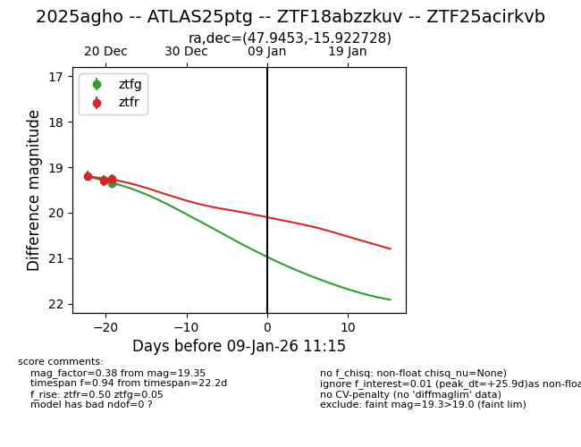
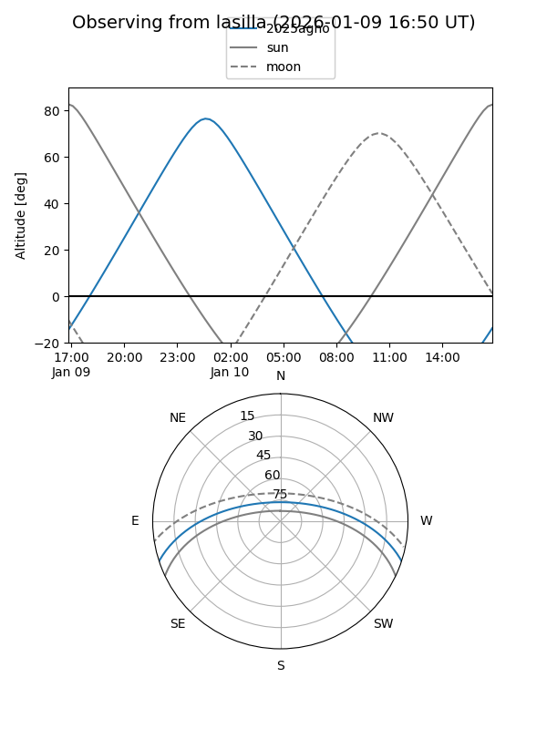
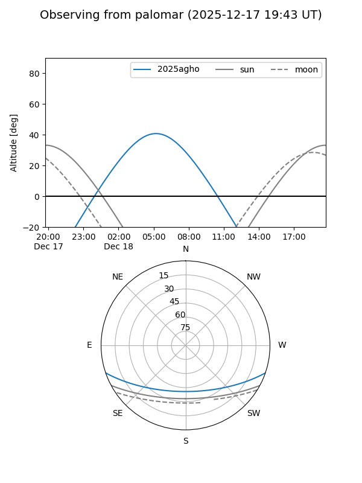
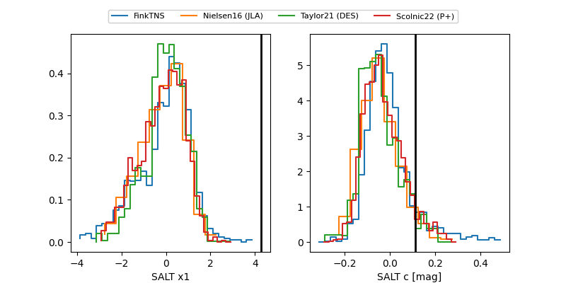

2025agho
Target 2025agho at 2025-12-18 10:45
Aliases and brokers:
FINK: fink-portal.org/ZTF25acirkvb
Lasair: lasair-ztf.lsst.ac.uk/objects/ZTF25acirkvb
ALeRCE: alerce.online/object/ZTF25acirkvb
TNS: wis-tns.org/object/2025agho
YSE: ziggy.ucolick.org/yse/transient_detail/2025agho
alt names
ZTF25acirkvb (ztf)
ZTF18abzzkuv (fink_ztf)
2025agho (tns,yse)
ATLAS25ptg (atlas)
Coordinates:
equatorial (ra, dec) = 47.9453,-15.92273
equatorial (HMS+DMS) = 03:11:46.88,-15:55:21.82
galactic (l, b) = (201.2137,-55.63139)
Photometry
last ztfg=19.28, ztfr=19.42
3 ztfg, 2 ztfr detections
Lightcurve

Visibility


Additional plots
